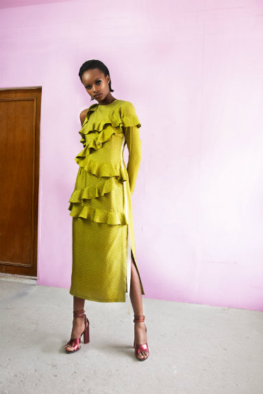
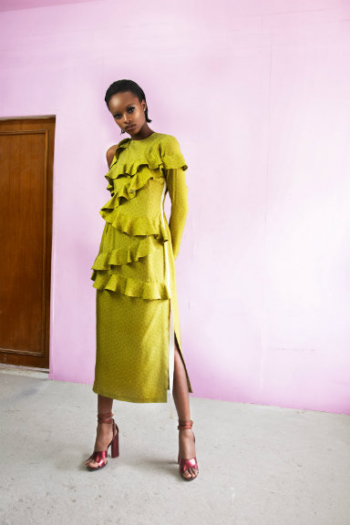

Founded in 1995, B-Side has gained a large international following over its 20 years in the business. Wale Adeyemi has built B-Side to be a cult favorite worn by the likes of Beyonce, Bruno Mars Rihanna and Tinie Tempah. Read more...

Tradition meets reinvention for Lisa Folawiyo through her namesake collection. Founded in 2005, Lisa Folawiyo uses Ankara (local West African cloth) with ornamentation to define her lines signature prints. Read more...

 

Knitwear woven into distinct patterns is the South African brand Max Hosa's signature style. The founder Laduma Ngxokolo desired to create knitwear that would appeal to the Xhosa initiates, called Amakrwala. Read more...

Based in New York City and designed by two sisters William Okpo finds its inspiration from the style of the founder's parents. Founded in 2010, Lizzy and Darlene Okpo design through the lens of their Nigerian and American culture. Read more...


Subtle luxury describes the beauty of the craftsmanship at Want Les Essentiels. Founded in 2006, Byron and Dexter Peart have been on a mission to make daily motion easier through smart, functional leather accessories. Read more...


Brother Vellies is the brainchild of Aurora James. Based in New York City, but crafted in South Africa, Kenya and Morocco Brother Vellies has brought traditional African footwear to the fashion elite while developing and maintaining jobs in Africa. Read more...